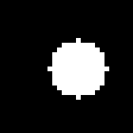
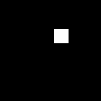

3D Volumes: CT, MRI and Microscopy
Libraries for 3D grayscale images (SImage3D of IntensityPixel or BinaryPixel), such as the MedMNIST3D datasets (28³ or 64³ CT, MRA and electron-microscopy volumes). They cover the three directions a program needs:
| Direction | Bundles | Getter |
|---|---|---|
| 3D → 3D | bundle_image3DIntensity_volume_basic_factory, bundle_image3DBinary_volume_basic_factory (identity, constants, casts), bundle_image3DIntensity_volume_factory, bundle_image3DBinary_volume_factory | get_extension_volume_intensityimg(), get_extension_volume_binaryimg() |
| 3D → 2D | bundle_image2DIntensity_fromVolume_factory, bundle_image2DBinary_fromVolume_factory | get_extension_volume_to_intensityimg(), get_extension_volume_to_binaryimg() |
| 3D → scalar | bundle_number_volumeShapeFromImg, bundle_number_volumeGranulometryFromImg, bundle_number_volumeProfileFromImg, and bundle_number_intensityStatsFromImg (2D and 3D) | get_extension_volume_nb() |
The 3D → 2D bundles are the bridge to every 2D library: once a program has a projection or a slice, all 2D image and descriptor operators apply. The 3D → 3D bundles also take 2D inputs (vol_extrude_*, vol_mask2d_*), so a 2D mask found on a projection can be pushed back into the volume.
Basic bundles first. As for 2D images, a library for a volume type must start with identity (index 1) and a function that takes no input and returns that type (index 2): node correction and mutation fall back to them. The basic volume bundles provide exactly that (vol_identity, then vol_ones), and the two 3D → 3D getters put them first. The intensity one also has vol_from_mask, which turns a mask into a 0/1 intensity volume.
Axes. Dimension 1 is y (rows), 2 is x (columns), 3 is z (slices). Collapsing an axis keeps the other two in order: a _z result is (y, x), a _y result (x, z), a _x result (y, z).
Conventions are those of the 2D libraries: at most three inputs; scalars clamped to [0, 1] and mapped to each operator's range; masks are binary volumes or intensity volumes thresholded at 0.5; empty selections never error. Objects are 26-connected and cavities 6-connected.
Example volume
A 28³ phantom (the MedMNIST3D size): a textured body (soft tissue, about 0.25) in dark air (0.02), an organ (0.55) with a dark cavity inside, a bright nodule (0.92) and a vessel (0.78) that wanders along z. The mask is vol ≥ 0.5: organ, nodule and vessel.
How to read the viewers. Each column is one volume; each row cuts all of them along one axis: the z row shows (y, x) slices, the y row (x, z) slices and the x row (y, z) slices. Drag a row's slider to move through the slices; it moves every volume of the row together, so a column can be compared with the input at the same depth. The number next to the axis is the current slice.
| volume | mask = vol ≥ 0.5 | |
|---|---|---|
| z 14/28 | ||
| y 14/28 | ||
| x 14/28 |
Basic volumes
The basic bundles hold the operators every volume library needs (see "Basic bundles first" above):
| Operator | Inputs | What it returns |
|---|---|---|
vol_identity | (vol) | the input, unchanged |
vol_ones | () (anything is ignored) | a volume of ones (intensity 1.0, or every voxel set) |
vol_zeros | () | a volume of zeros (black, or empty mask) |
vol_from_mask | (mask) | intensity bundle only: set voxels become 1.0, the others 0.0 |
viewer(["mask" => mask, "vol_from_mask(mask)" => call(ib(:vol_from_mask), mask),| mask | vol_from_mask(mask) | vol_ones() | vol_zeros() | |
|---|---|---|---|---|
| z 14/28 | ||||
| y 14/28 | ||||
| x 14/28 |
3D → 3D: intensity
All operators below take an intensity volume and return one of the same size. A number p is always clamped to [0, 1]; the tables say what it controls.
Filters
| Operator | What it does | p |
|---|---|---|
vol_gaussian(vol, p) | Blurs with a Gaussian of standard deviation σ = 0.3 + 2.7p voxels: removes noise and fine texture. | 0 → σ 0.3 (almost nothing), default 0.26 → σ 1, 1 → σ 3 |
vol_gaussian_s05, vol_gaussian_s1, vol_gaussian_s2 | The same with a fixed σ of 0.5, 1 and 2 voxels. | — |
vol_mean_3, vol_mean_5 | Each voxel becomes the mean of the 3³ (5³) cube around it. | — |
vol_gradient | Strength of the local intensity change (central differences): bright on edges, dark on flat regions. | — |
vol_laplacian | Absolute 6-neighbour Laplacian: bright on spots, thin lines and edges, 0 where the intensity is flat or a linear ramp. | — |
vol_dog(vol, p) | Difference of Gaussians G(σ) − G(1.6σ), σ = 0.5 + 1.5p, centred on 0.5: blobs about σ voxels across become bright (> 0.5), their surroundings dark. | default 0.33 → σ 1 |
vol_local_std | Twice the standard deviation in the 3³ cube: high in textured regions and on edges, 0 where flat. | — |
vol_unsharp(vol, p) | Sharpens: adds back 2p times the detail removed by a σ = 1 blur. | 0 = unchanged, default 0.5 → amount 1 |
viewer(["volume" => vol, "vol_gaussian" => call(iv(:vol_gaussian), vol),
"vol_gaussian_s05" => call(iv(:vol_gaussian_s05), vol), "vol_gaussian_s2" => call(iv(:vol_gaussian_s2), vol),| volume | vol_gaussian | vol_gaussian_s05 | vol_gaussian_s2 | vol_mean_3 | vol_mean_5 | |
|---|---|---|---|---|---|---|
| z 14/28 | ||||||
| y 14/28 | ||||||
| x 14/28 |
viewer(["volume" => vol, "vol_gradient" => call(iv(:vol_gradient), vol), "vol_laplacian" => call(iv(:vol_laplacian), vol),
"vol_dog" => call(iv(:vol_dog), vol), "vol_local_std" => call(iv(:vol_local_std), vol),| volume | vol_gradient | vol_laplacian | vol_dog | vol_local_std | vol_unsharp | |
|---|---|---|---|---|---|---|
| z 14/28 | ||||||
| y 14/28 | ||||||
| x 14/28 |
Effect of p on vol_gaussian, vol_dog and vol_unsharp:
viewer(["gaussian p = 0" => call(iv(:vol_gaussian), vol, 0.0), "gaussian p = 0.26" => call(iv(:vol_gaussian), vol, 0.26),| gaussian p = 0 | gaussian p = 0.26 | gaussian p = 0.6 | gaussian p = 1 | |
|---|---|---|---|---|
| z 14/28 | ||||
| y 14/28 | ||||
| x 14/28 |
viewer(["dog p = 0" => call(iv(:vol_dog), vol, 0.0), "dog p = 0.33" => call(iv(:vol_dog), vol, 0.33),
"dog p = 1" => call(iv(:vol_dog), vol, 1.0), "unsharp p = 0.25" => call(iv(:vol_unsharp), vol, 0.25),| dog p = 0 | dog p = 0.33 | dog p = 1 | unsharp p = 0.25 | unsharp p = 1 | |
|---|---|---|---|---|---|
| z 14/28 | |||||
| y 14/28 | |||||
| x 14/28 |
Intensity transforms
| Operator | What it does | Parameters |
|---|---|---|
vol_window(vol, level, width) | CT windowing: maps the intensity range [level − width/2, level + width/2] to [0, 1]; everything below is black, everything above white. Highlights one tissue. | defaults 0.5, 0.5 |
vol_normalize | Stretches the volume's own [min, max] to [0, 1]. | — |
vol_robust_normalize | Stretches the 2nd–98th percentile range to [0, 1]: a few extreme voxels do not squash the contrast. | — |
vol_equalize | Histogram equalisation: each voxel becomes the share of voxels darker than or as dark as it, spreading contrast evenly. | — |
vol_gamma(vol, p) | Gamma correction with exponent 2^(4p − 2): p < 0.5 brightens the dark range, p > 0.5 darkens it. | default 0.5 = unchanged |
vol_invert | 1 − v. | — |
vol_threshold_zero(vol, t) | Keeps voxels ≥ t with their value and sets the others to 0. | default 0.5 |
viewer(["volume" => vol, "vol_normalize" => call(iv(:vol_normalize), vol),
"vol_robust_normalize" => call(iv(:vol_robust_normalize), vol), "vol_equalize" => call(iv(:vol_equalize), vol),| volume | vol_normalize | vol_robust_normalize | vol_equalize | vol_invert | vol_threshold_zero | |
|---|---|---|---|---|---|---|
| z 14/28 | ||||||
| y 14/28 | ||||||
| x 14/28 |
Effect of the window: the level selects which intensities become mid-grey, the width how many of them are stretched over the full range.
viewer(["level 0.6, width 0.15" => call(iv(:vol_window), vol, 0.6, 0.15),
"level 0.25, width 0.2" => call(iv(:vol_window), vol, 0.25, 0.2),
"level 0.25, width 0.6" => call(iv(:vol_window), vol, 0.25, 0.6),| level 0.6, width 0.15 | level 0.25, width 0.2 | level 0.25, width 0.6 | level 0.85, width 0.1 | |
|---|---|---|---|---|
| z 14/28 | ||||
| y 14/28 | ||||
| x 14/28 |
The first window shows the organ, nodule and vessel; the second the soft tissue; the third the same with less contrast; the fourth only the nodule.
viewer(["gamma p = 0" => call(iv(:vol_gamma), vol, 0.0), "gamma p = 0.25" => call(iv(:vol_gamma), vol, 0.25),
"gamma p = 0.75" => call(iv(:vol_gamma), vol, 0.75), "threshold_zero t = 0.3" => call(iv(:vol_threshold_zero), vol, 0.3),| gamma p = 0 | gamma p = 0.25 | gamma p = 0.75 | threshold_zero t = 0.3 | threshold_zero t = 0.8 | |
|---|---|---|---|---|---|
| z 14/28 | |||||
| y 14/28 | |||||
| x 14/28 |
Two volumes, voxel by voxel
vol_add, vol_sub, vol_absdiff, vol_mult, vol_min, vol_max and vol_average combine two volumes voxel by voxel (results are clamped to [0, 1]). The second volume b is a phantom without the nodule and with a smaller organ, so vol_absdiff(a, b) shows exactly what differs.
viewer(["a" => vol, "b" => vol_b, "vol_add" => call(iv(:vol_add), vol, vol_b), "vol_sub" => call(iv(:vol_sub), vol, vol_b),| a | b | vol_add | vol_sub | vol_absdiff | vol_mult | |
|---|---|---|---|---|---|---|
| z 14/28 | ||||||
| y 14/28 | ||||||
| x 14/28 |
viewer(["a" => vol, "b" => vol_b, "vol_min" => call(iv(:vol_min), vol, vol_b), "vol_max" => call(iv(:vol_max), vol, vol_b),| a | b | vol_min | vol_max | vol_average | |
|---|---|---|---|---|---|
| z 14/28 | |||||
| y 14/28 | |||||
| x 14/28 |
Grey morphology
Each voxel is replaced by the minimum (erosion) or maximum (dilation) over a cube of side 2r + 1 around it, r = 1 + round(2p): p ≤ 0.25 → 3³, 0.25 < p < 0.75 → 5³, p ≥ 0.75 → 7³ (default p = 0: 3³).
| Operator | What it does |
|---|---|
vol_erode(vol, p) | Minimum over the cube: bright structures shrink, thin bright ones (the vessel) vanish. |
vol_dilate(vol, p) | Maximum: bright structures grow, small dark ones (the cavity) vanish. |
vol_open(vol, p) | Erosion then dilation: removes bright structures smaller than the cube, keeps the rest. |
vol_close(vol, p) | Dilation then erosion: removes dark structures smaller than the cube. |
vol_morph_gradient(vol, p) | Dilation minus erosion: bright on boundaries. |
vol_tophat(vol, p) | Volume minus its opening: only the small bright structures (vessel, nodule). |
vol_bothat(vol, p) | Closing minus volume: only the small dark structures (the cavity). |
vol_erode_cross, vol_dilate_cross | Minimum / maximum over the voxel and its 6 face neighbours only (a gentler 3D cross). |
viewer(["volume" => vol, "vol_erode" => call(iv(:vol_erode), vol), "vol_dilate" => call(iv(:vol_dilate), vol),
"vol_open" => call(iv(:vol_open), vol), "vol_close" => call(iv(:vol_close), vol),| volume | vol_erode | vol_dilate | vol_open | vol_close | vol_morph_gradient | |
|---|---|---|---|---|---|---|
| z 14/28 | ||||||
| y 14/28 | ||||||
| x 14/28 |
viewer(["volume" => vol, "vol_tophat" => call(iv(:vol_tophat), vol), "vol_bothat" => call(iv(:vol_bothat), vol),| volume | vol_tophat | vol_bothat | vol_erode_cross | vol_dilate_cross | |
|---|---|---|---|---|---|
| z 14/28 | |||||
| y 14/28 | |||||
| x 14/28 |
Effect of p (cube size) on vol_dilate and vol_tophat:
viewer(["dilate p = 0 (3³)" => call(iv(:vol_dilate), vol, 0.0), "dilate p = 0.5 (5³)" => call(iv(:vol_dilate), vol, 0.5),
"dilate p = 1 (7³)" => call(iv(:vol_dilate), vol, 1.0), "tophat p = 0 (3³)" => call(iv(:vol_tophat), vol, 0.0),| dilate p = 0 (3³) | dilate p = 0.5 (5³) | dilate p = 1 (7³) | tophat p = 0 (3³) | tophat p = 1 (7³) | |
|---|---|---|---|---|---|
| z 14/28 | |||||
| y 14/28 | |||||
| x 14/28 |
Masks and distance maps
| Operator | What it does |
|---|---|
vol_mask_keep(vol, mask) | Keeps the voxels inside the mask, sets the others to 0. |
vol_mask_zero(vol, mask) | The opposite: sets the voxels inside the mask to 0. |
vol_distance_inside(mask) | For each voxel of the mask, its distance to the nearest voxel outside, divided by the largest such distance: 1 deep inside thick parts, small near the surface, 0 outside. |
vol_proximity(mask) | 1 on the mask, decreasing with the distance to it (1 − distance / volume diagonal): "how close am I to the mask". |
The mask can be binary or an intensity volume (voxels ≥ 0.5 are inside); vol_distance_inside(vol, t) and vol_proximity(vol, t) threshold an intensity volume at t first.
viewer(["mask" => mask, "vol_mask_keep(vol, mask)" => call(iv(:vol_mask_keep), vol, mask),
"vol_mask_zero(vol, mask)" => call(iv(:vol_mask_zero), vol, mask),
"vol_distance_inside" => call(iv(:vol_distance_inside), mask),| mask | vol_mask_keep(vol, mask) | vol_mask_zero(vol, mask) | vol_distance_inside | vol_proximity | |
|---|---|---|---|---|---|
| z 14/28 | |||||
| y 14/28 | |||||
| x 14/28 |
3D → 3D: masks
Binarisation
| Operator | What it does | Parameter |
|---|---|---|
vol_threshold(vol, t) | Voxels ≥ t. (A binary input is returned as is.) | default 0.5 |
vol_otsu(vol) | Picks the threshold automatically (Otsu: the level that best splits the voxels into two groups). Here it finds the strongest split, body against air, not the organ. | — |
vol_top_fraction(vol, p) | The brightest fraction p of the voxels. | default 0.1 |
viewer(["volume" => vol, "vol_threshold t = 0.2" => call(bv(:vol_threshold), vol, 0.2),
"vol_threshold t = 0.5" => call(bv(:vol_threshold), vol, 0.5), "vol_threshold t = 0.85" => call(bv(:vol_threshold), vol, 0.85),| volume | vol_threshold t = 0.2 | vol_threshold t = 0.5 | vol_threshold t = 0.85 | vol_otsu | |
|---|---|---|---|---|---|
| z 14/28 | |||||
| y 14/28 | |||||
| x 14/28 |
viewer(["top_fraction p = 0.005" => call(bv(:vol_top_fraction), vol, 0.005),
"top_fraction p = 0.02" => call(bv(:vol_top_fraction), vol, 0.02),
"top_fraction p = 0.1" => call(bv(:vol_top_fraction), vol, 0.1),| top_fraction p = 0.005 | top_fraction p = 0.02 | top_fraction p = 0.1 | top_fraction p = 0.4 | |
|---|---|---|---|---|
| z 14/28 | ||||
| y 14/28 | ||||
| x 14/28 |
Clean-up
The test mask below is the phantom's mask plus problems a real segmentation has: scattered single voxels (noise) and a slab glued to the volume's border.
| Operator | What it does | Parameter |
|---|---|---|
vol_fill_holes | Fills every enclosed cavity (background not connected to the volume's border): the organ becomes solid. | — |
vol_holes | Only the cavities: what vol_fill_holes adds. | — |
vol_largest_component | Keeps the largest connected object (26-connectivity). | — |
vol_central_component | Keeps the object whose centre is closest to the volume's centre. | — |
vol_remove_small(mask, p) | Removes objects smaller than the fraction p of all voxels. | default 0.001 (≈ 22 voxels in 28³) |
vol_clear_border | Removes objects touching the volume's border. | — |
vol_majority | 3³ majority vote: a voxel is set when most of its cube is; removes isolated voxels and fills one-voxel pits. | — |
vol_bbox_fill | Replaces each object by its filled bounding box. | — |
viewer(["messy mask" => messy_mask, "vol_fill_holes" => call(bv(:vol_fill_holes), messy_mask),
"vol_holes" => call(bv(:vol_holes), messy_mask), "vol_largest_component" => call(bv(:vol_largest_component), messy_mask),| messy mask | vol_fill_holes | vol_holes | vol_largest_component | vol_central_component | |
|---|---|---|---|---|---|
| z 14/28 | |||||
| y 14/28 | |||||
| x 14/28 |
viewer(["messy mask" => messy_mask, "vol_remove_small" => call(bv(:vol_remove_small), messy_mask),
"vol_clear_border" => call(bv(:vol_clear_border), messy_mask), "vol_majority" => call(bv(:vol_majority), messy_mask),| messy mask | vol_remove_small | vol_clear_border | vol_majority | vol_bbox_fill | |
|---|---|---|---|---|---|
| z 14/28 | |||||
| y 14/28 | |||||
| x 14/28 |
Effect of p on vol_remove_small. The messy mask holds 23 single noise voxels and three larger objects; their sizes are printed below the viewer. Each p removes the objects under p · 28³ voxels:
viewer(["p = 0.00004 (< 1 voxel)" => call(bv(:vol_remove_small), messy_mask, 0.00004),
"p = 0.001 (< 22)" => call(bv(:vol_remove_small), messy_mask, 0.001),
"p = 0.01 (< 220)" => call(bv(:vol_remove_small), messy_mask, 0.01),| p = 0.00004 (< 1 voxel) | p = 0.001 (< 22) | p = 0.01 (< 220) | p = 0.05 (< 1100) | |
|---|---|---|---|---|
| z 14/28 | ||||
| y 14/28 | ||||
| x 14/28 |
object sizes in the messy mask (voxels): [1385, 316, 102, 1, 1, 1, 1, 1, 1, 1, 1, 1, 1, 1, 1, 1, 1, 1, 1, 1, 1, 1, 1, 1, 1, 1]Binary morphology and logic
The binary versions of the morphology operators, with the same cube sizes (p → 3³, 5³, 7³): vol_erode (a voxel stays only if its whole cube is set: objects shrink, thin ones vanish), vol_dilate (a voxel becomes set if any voxel of its cube is: objects grow), vol_open (removes specks and thin bridges), vol_close (fills small gaps and dents), vol_morph_gradient (a shell around each object's surface), vol_erode_cross and vol_dilate_cross (6-neighbour cross). Logic: vol_and, vol_or, vol_xor (two masks) and vol_not.
viewer(["mask" => mask, "vol_erode" => call(bv(:vol_erode), mask), "vol_dilate" => call(bv(:vol_dilate), mask),
"vol_open" => call(bv(:vol_open), mask), "vol_close" => call(bv(:vol_close), mask),| mask | vol_erode | vol_dilate | vol_open | vol_close | vol_morph_gradient | |
|---|---|---|---|---|---|---|
| z 14/28 | ||||||
| y 14/28 | ||||||
| x 14/28 |
viewer(["vol_erode_cross" => call(bv(:vol_erode_cross), mask), "vol_dilate_cross" => call(bv(:vol_dilate_cross), mask),| vol_erode_cross | vol_dilate_cross | dilate p = 0.5 (5³) | dilate p = 1 (7³) | |
|---|---|---|---|---|
| z 14/28 | ||||
| y 14/28 | ||||
| x 14/28 |
viewer(["a = mask" => mask, "b" => mask_b, "vol_and(a, b)" => call(bv(:vol_and), mask, mask_b),
"vol_or(a, b)" => call(bv(:vol_or), mask, mask_b), "vol_xor(a, b)" => call(bv(:vol_xor), mask, mask_b),| a = mask | b | vol_and(a, b) | vol_or(a, b) | vol_xor(a, b) | vol_not(a) | |
|---|---|---|---|---|---|---|
| z 14/28 | ||||||
| y 14/28 | ||||||
| x 14/28 |
3D → 3D: geometry (both bundles)
These move voxels around without changing their values, so they exist for intensity volumes and masks alike.
| Operator | What it does | Parameter |
|---|---|---|
vol_flip_y, vol_flip_x, vol_flip_z | Mirror along one axis (top ↔ bottom, left ↔ right, first ↔ last slice). | — |
vol_rot90_xy, vol_rot90_xz, vol_rot90_yz | Quarter turn in one plane (unchanged when that plane is not square). | — |
vol_shift_y(vol, u), vol_shift_x, vol_shift_z | Shifts by (u − 0.5) of the size along one axis; uncovered voxels are 0. | 0.5 = no shift, 0.75 = a quarter of the size forward, 0.25 backward |
vol_crop_bbox(vol, mask, margin) | Cuts out the bounding box of the mask (grown by margin of its size) and stretches it back to 28³: a 3D zoom on the mask. | default 0.1 |
vol_crop_bbox_largest(vol, mask, margin) | Same, on the mask's largest object only. | default 0.1 |
vol_recenter(vol, mask) | Shifts so the mask's centre of mass lands on the volume's centre. | — |
vol_recenter_largest(vol, mask) | Same, for the mask's largest object. | — |
viewer(["volume" => vol, "vol_flip_y" => call(iv(:vol_flip_y), vol), "vol_flip_x" => call(iv(:vol_flip_x), vol),
"vol_flip_z" => call(iv(:vol_flip_z), vol), "vol_rot90_xy" => call(iv(:vol_rot90_xy), vol),| volume | vol_flip_y | vol_flip_x | vol_flip_z | vol_rot90_xy | vol_rot90_xz | vol_rot90_yz | |
|---|---|---|---|---|---|---|---|
| z 14/28 | |||||||
| y 14/28 | |||||||
| x 14/28 |
viewer(["volume" => vol, "vol_shift_y(·, 0.7)" => call(iv(:vol_shift_y), vol, 0.7),
"vol_shift_x(·, 0.3)" => call(iv(:vol_shift_x), vol, 0.3), "vol_shift_z(·, 0.7)" => call(iv(:vol_shift_z), vol, 0.7),| volume | vol_shift_y(·, 0.7) | vol_shift_x(·, 0.3) | vol_shift_z(·, 0.7) | vol_shift_z(·, 0.9) | |
|---|---|---|---|---|---|
| z 14/28 | |||||
| y 14/28 | |||||
| x 14/28 |
The crops and recentring below are driven by the nodule (vol_threshold(vol, 0.85)); the _largest versions by the phantom mask, whose largest object is the organ.
viewer(["volume" => vol, "nodule mask" => nodule_mask,
"crop_bbox(vol, nodule, 0)" => call(iv(:vol_crop_bbox), vol, nodule_mask, 0.0),
"crop_bbox(vol, nodule, 0.5)" => call(iv(:vol_crop_bbox), vol, nodule_mask, 0.5),
"crop_bbox(vol, nodule, 1)" => call(iv(:vol_crop_bbox), vol, nodule_mask, 1.0),| volume | nodule mask | crop_bbox(vol, nodule, 0) | crop_bbox(vol, nodule, 0.5) | crop_bbox(vol, nodule, 1) | crop_bbox_largest(vol, mask) | |
|---|---|---|---|---|---|---|
| z 14/28 | ||||||
| y 14/28 | ||||||
| x 14/28 |
viewer(["volume" => vol, "vol_recenter(vol, nodule)" => call(iv(:vol_recenter), vol, nodule_mask),
"vol_recenter_largest(vol, mask)" => call(iv(:vol_recenter_largest), vol, mask),| volume | vol_recenter(vol, nodule) | vol_recenter_largest(vol, mask) | binary: crop_bbox(mask, nodule) | |
|---|---|---|---|---|
| z 14/28 | ||||
| y 14/28 | ||||
| x 14/28 |
2D → 3D
These operators take a 2D image and use it on the volume.
vol_extrude_z(img2d)builds a volume whose everyzslice is the 2D image (a28 × 28image(y, x)): the image is pushed through the volume like a cookie cutter, making a prism.vol_extrude_yrepeats a(x, z)image alongy,vol_extrude_xa(y, z)image alongx.vol_mask2d_z(vol, mask2d)keeps, in everyzslice of the volume, only the voxels where the 2D mask is set (binary, or intensity≥ 0.5), and zeroes the rest.vol_mask2d_yandvol_mask2d_xdo the same along the other axes.
The 2D input used here is an "F" shape, so the orientation is easy to follow (shown below at 6×):
2D input letter (28 × 28) | 2D mask disk (28 × 28) |
|---|---|
 |
vol_extrude_<axis>(letter): in the z row, every slice of vol_extrude_z is the letter, whatever the slider; the y and x rows cut across the extrusion, so they show stripes (the letter seen from the side). The other two extrusions are the same idea along y and x: each one shows the letter in the row of its own axis and stripes in the other two.
viewer(["vol_extrude_z(letter)" => call(iv(:vol_extrude_z), letter_img),
"vol_extrude_y(letter)" => call(iv(:vol_extrude_y), letter_img),
"vol_extrude_x(letter)" => call(iv(:vol_extrude_x), letter_img),| vol_extrude_z(letter) | vol_extrude_y(letter) | vol_extrude_x(letter) | binary: vol_extrude_z | |
|---|---|---|---|---|
| z 14/28 | ||||
| y 14/28 | ||||
| x 14/28 |
vol_mask2d_<axis>(vol, disk): along z, every slice of the volume is cut to the disk, so the result is the phantom cut by a cylinder along z:
viewer(["volume" => vol, "vol_mask2d_z(vol, disk)" => call(iv(:vol_mask2d_z), vol, disk2d),
"vol_mask2d_y(vol, disk)" => call(iv(:vol_mask2d_y), vol, disk2d),| volume | vol_mask2d_z(vol, disk) | vol_mask2d_y(vol, disk) | vol_mask2d_x(vol, disk) | |
|---|---|---|---|---|
| z 14/28 | ||||
| y 14/28 | ||||
| x 14/28 |
A typical chain: find something on a 2D projection, then push it back into the volume. Here the nodule's silhouette along z (proj_any_z, a 2D mask) removes everything outside the nodule's column:
proj_any_z(nodule_mask) (2D) |
|---|
 |
| volume | vol_mask2d_z(vol, silhouette) | |
|---|---|---|
| z 14/28 | ||
| y 14/28 | ||
| x 14/28 |
Projections, slices and descriptors
Turning a volume into 2D images (projections, slices) or into numbers (shape, size distribution, intensity profiles) is on the next page, 3D Volumes: Projections and Descriptors.
Bundles
UTCGP.image3D_volume_common — Module
Shared machinery for volume (3D grayscale) libraries.
Sections
| Section | Main functions |
|---|---|
| Values and foreground | voxel_values, voxel_foreground, store_pixels!, to_pixels |
| Connected components | VolumeTable, volume_table, centroid, covariance3 |
| Holes | volume_holes! |
| Distance transforms | volume_distance_map! (exact), volume_distance_map_upto! (bounded) |
| Separable filters | box_extremum!, cross_extremum!, gaussian_kernel, gaussian_weights, box_weights, separable_convolve! |
| Resampling | resample_box (trilinear), resample_box_nearest |
Conventions
Axes extend the 2D convention: dimension 1 is the row (y), dimension 2 the column (x), dimension 3 the slice (z). Normalised coordinates map the first voxel centre to 0 and the last to 1.
Objects are 26-connected; background regions (holes) are 6-connected, the dual connectivity, so a diagonal gap never lets a cavity leak out.
- 26-connected: two voxels touch if they share a face, an edge or a corner (every voxel of the surrounding 3³ cube except itself).
- 6-connected: only shared faces (above, below, left, right, previous and next slice).
Performance notes
Julia arrays are column-major: A[r, c, s] and A[r+1, c, s] are adjacent in memory. The hot loops therefore run along y (rows) innermost, and operations along x or z are written as whole-array shifts (_combine_shift!) so they also read memory contiguously. Temporary arrays come from per-task scratch buffers, keyed by a Symbol; a buffer is reused by the next call with the same key in the same task.
Example
fg = falses(8, 8, 8)
fg[2:3, 2:3, 2:3] .= true # a 2³ cube
fg[6, 6, 6] = true # a lone voxel
t = volume_table(fg, identity) # `identity`: the array already holds Bools
t.n # 2 objects
t.area # [8, 1]
centroid(t, 1) # (2.5, 2.5, 2.5)UTCGP.image3D_volume_basic — Module
Basic volume operators: identity, constant volumes and casts between volume kinds.
Bundles
- bundleimage3DIntensityvolumebasicfactory
- bundleimage3DBinaryvolumebasicfactory
The order of the first two entries is a convention the search relies on, as for the 2D basic bundles:
- identity
(vol) -> vol, used when a node is turned into a pass-through; - a constant volume that takes no input
() -> vol, what node correction and mutation fall back to when no other function can produce the type.
Keep them first when adding operators. The exhaustive operator list is on the Bundle Catalogue page.
Example
using UTCGP, ImageCore
I = typeof(SImageND(IntensityPixel{N0f8}.(zeros(28, 28, 28)))) # the volume type to produce
bundle = bundle_image3DIntensity_volume_basic_factory
constant = bundle[2].fn(I) # vol_ones specialised for I
constant() # a 28³ volume of ones, built from nothing
constant(42, "ignored") # same: inputs are ignored
to_intensity = bundle[:vol_from_mask].fn(I)
to_intensity(mask) # set voxels → 1.0, the others → 0.0 (mask: a 28³ binary volume)UTCGP.image3D_volume_basic.bundle_image3DIntensity_volume_basic_factory — Constant
bundle_image3DIntensity_volume_basic_factoryBasic operators returning an intensity volume, in this order:
vol_identity(vol): the volume unchanged.vol_ones(): a volume of ones (accepts and ignores any arguments).vol_zeros(): a volume of zeros (accepts and ignores any arguments).vol_from_mask(mask): a binary volume as0/1intensities.
Specialise it on an intensity volume type, e.g. SImage3D{28,28,28,IntensityPixel{N0f8}}.
UTCGP.image3D_volume_basic.bundle_image3DBinary_volume_basic_factory — Constant
bundle_image3DBinary_volume_basic_factoryBasic operators returning a binary volume, in this order:
vol_identity(mask): the mask unchanged.vol_ones(): a mask with every voxel set (accepts and ignores any arguments).vol_zeros(): an empty mask (accepts and ignores any arguments).
Specialise it on a binary volume type, e.g. SImage3D{28,28,28,BinaryPixel{Bool}}. Binarising an intensity volume is vol_threshold / vol_otsu in bundle_image3DBinary_volume_factory.
UTCGP.image3D_volume — Module
Volume → volume operators for 3D grayscale images (CT, MRI, microscopy): filtering, intensity transforms, morphology, binarisation, mask clean-up, distance maps and geometry, plus 2D → 3D extrusion.
Bundles
- bundleimage3DIntensityvolume_factory
- bundleimage3DBinaryvolume_factory
The exhaustive operator list is on the Bundle Catalogue page.
How this file is organised
Each operator is a kernel (plain Julia on arrays) wrapped by a factory.
Kernels write into a destination array and allocate nothing; they come in three kinds:
| Kind | Input | Writes |
|---|---|---|
intensity kernels k!(result, values, p…) | Array{Float64,3} of voxel values (from voxel_values) | Array{Float64,3} |
binary kernels k!(result, fg, p…) | Array{Bool,3} foreground (from voxel_foreground) | Array{Bool,3} |
geometry kernels k!(pixels, src.img, …) | the voxel array itself | pixels of the same type |
Inputs and results live in per-task scratch arrays, so a call allocates nothing but (without out) the returned volume.
A factory is a function of the output volume type I (e.g. SImage3D{28,28,28,IntensityPixel{N0f8}}): it defines the operator's methods for that type and returns the function. Each method sanitises scalar arguments with clamp_unit (clamped to [0, 1], NaN → default) and writes into out when given. Every method also accepts and ignores extra trailing arguments (args...), which is how MAGE passes unused inputs.
Call tree of a value operator (e.g. vol_gaussian(vol, p; out)):
output_pixels(out, vol) where to write: out.img or a new array
_run_kernel!(pixels, kernel, input, p)
├── _kernel_input(vol) voxel values / foreground (scratch)
├── _kernel_result(P, size) Float64 / Bool result (scratch)
├── kernel(result, input, p) e.g. _gaussian!(result, values, σ)
└── store_pixels!(pixels, result) round, clamp, wrap in pixels
image_result(out, pixels, size_type) out, or the new volumeGeometry operators (_flip!, _shift!, _crop!, …) and the selection operators (_otsu_mask!, _component!) write the output pixels directly.
Example
using UTCGP, ImageCore
vol = SImageND(IntensityPixel{N0f8}.(rand(28, 28, 28))) # a 28³ intensity volume
I = typeof(vol)
# Specialise the operator on the volume type, then call it.
blur = bundle_image3DIntensity_volume_factory[:vol_gaussian].fn(I)
blur(vol) # σ = 1 voxel (the default p = 0.26 gives 0.3 + 2.7·0.26 ≈ 1)
blur(vol, 1.0) # σ = 3 voxels
blur(vol, 0.0, 7) # trailing extra inputs are ignored: σ = 0.3 voxelUTCGP.image3D_volume.bundle_image3DIntensity_volume_factory — Constant
bundle_image3DIntensity_volume_factoryOperators returning a same-size intensity volume.
- Filters:
vol_gaussian(σ = 0.3 + 2.7p) and fixedvol_gaussian_s05,_s1,_s2;vol_mean_3,vol_mean_5;vol_gradient(central differences);vol_laplacian(absolute, 6-neighbour);vol_dog(difference of Gaussians, centred on0.5);vol_local_std;vol_unsharp. - Intensity:
vol_normalize(min–max),vol_robust_normalize(2nd–98th percentile),vol_window(vol, level, width)(CT windowing),vol_gamma,vol_invert,vol_equalize,vol_threshold_zero. - Two volumes:
vol_add,vol_sub,vol_absdiff,vol_mult,vol_min,vol_max,vol_average. - Grey morphology with a
(2r+1)³cube (r = 1 + round(2p)):vol_erode,vol_dilate,vol_open,vol_close,vol_morph_gradient,vol_tophat,vol_bothat;vol_erode_cross,vol_dilate_crossuse the 6-neighbour cross. - Masks:
vol_mask_keep(vol, mask),vol_mask_zero(vol, mask);vol_distance_inside(mask)andvol_proximity(mask)turn a mask into a distance map. - Geometry (shared with the binary bundle):
vol_flip_x/y/z,vol_rot90_xy/xz/yz(identity on non-square planes),vol_shift_x/y/z(vol, s)((s − 0.5)of the size),vol_crop_bbox[_largest](vol, mask[, margin])(crop and resize back, trilinear),vol_recenter[_largest](vol, mask). - From 2D:
vol_extrude_x/y/z(img2d)repeats a 2D image through the volume;vol_mask2d_x/y/z(vol, mask2d)applies a 2D mask to every slice.
Axes: dimension 1 is y (rows), 2 is x (columns), 3 is z (slices). Scalar parameters are clamped to [0, 1] and mapped to each operator's range; NaN falls back to the default. Masks are binary volumes, or intensity volumes thresholded at 0.5, of the same size. Intensity outputs are clamped to the storage range of the pixel type.
UTCGP.image3D_volume.bundle_image3DBinary_volume_factory — Constant
bundle_image3DBinary_volume_factoryOperators returning a same-size binary volume (mask).
- Binarisation of an intensity volume:
vol_threshold(vol, t),vol_otsu,vol_top_fraction(vol, p)(brightestpof the voxels, default 10%). - Binary morphology with a
(2r+1)³cube:vol_erode,vol_dilate,vol_open,vol_close,vol_morph_gradient(boundary shell);vol_erode_cross,vol_dilate_cross. - Clean-up:
vol_fill_holes,vol_holes(enclosed cavities),vol_largest_component,vol_central_component,vol_remove_small(p)(objects underpof the voxels, default 0.001),vol_clear_border,vol_majority(3³ vote),vol_bbox_fill. - Logic:
vol_and,vol_or,vol_xor,vol_not. - Geometry and 2D extrusion as in the intensity bundle (nearest neighbour).
Axes: dimension 1 is y (rows), 2 is x (columns), 3 is z (slices). Scalar parameters are clamped to [0, 1] and mapped to each operator's range; NaN falls back to the default. Masks are binary volumes, or intensity volumes thresholded at 0.5, of the same size. Intensity outputs are clamped to the storage range of the pixel type.
Timings for the examples
Measured during this documentation build. See Timing methodology for measurement limits and input cases that can make operators expensive.
Julia 1.13.2; znver3; 1 Julia thread(s); optimisation level 2.
Times are warmed wall-clock measurements of the actual calls above, including invokelatest and allocations. Loading, factory generation and image rendering are excluded. CPU load and garbage collection affect these values. The maximum is the slowest observed sample, not a worst-case bound.
| Input | Dimensions | Pixel storage |
|---|---|---|
| phantom mask #1 | 28×28×28 | BinaryPixel{Bool} |
| phantom #2 | 28×28×28 | IntensityPixel{FixedPointNumbers.N0f8} |
| image #3 | 28×28×28 | IntensityPixel{FixedPointNumbers.N0f8} |
| image #4 | 28×28×28 | BinaryPixel{Bool} |
| image #5 | 28×28×28 | BinaryPixel{Bool} |
| image #6 | 28×28×28 | BinaryPixel{Bool} |
| image #7 | 28×28 | IntensityPixel{FixedPointNumbers.N0f8} |
| image #8 | 28×28 | BinaryPixel{Bool} |
| image #9 | 28×28 | BinaryPixel{Bool} |
| image #10 | 28×28 | BinaryPixel{Bool} |
Numeric-only plot calls of the same operator and arity are grouped: argument ranges cover the sampled values, the median is the median of the per-case medians, and the maximum covers every observed sample. Image calls keep a row for each input/parameter combination.
| Operator | Inputs | Output | Median (µs) | Observed max (µs) | Allocated bytes (median) | Cases / samples |
|---|---|---|---|---|---|---|
vol_from_mask | phantom mask #1 | 28×28×28, IntensityPixel{FixedPointNumbers.N0f8} | 2.68 | 11.49 | 22056 | 1 / 3 |
vol_ones | 28×28×28, IntensityPixel{FixedPointNumbers.N0f8} | 2.44 | 10.34 | 22056 | 1 / 3 | |
vol_zeros | 28×28×28, IntensityPixel{FixedPointNumbers.N0f8} | 2.36 | 11.24 | 22056 | 1 / 3 | |
vol_gaussian | phantom #2 | 28×28×28, IntensityPixel{FixedPointNumbers.N0f8} | 214.41 | 225.94 | 22056 | 1 / 3 |
vol_gaussian_s05 | phantom #2 | 28×28×28, IntensityPixel{FixedPointNumbers.N0f8} | 166.56 | 166.78 | 22056 | 1 / 3 |
vol_gaussian_s2 | phantom #2 | 28×28×28, IntensityPixel{FixedPointNumbers.N0f8} | 282.78 | 299.19 | 22056 | 1 / 3 |
vol_mean_3 | phantom #2 | 28×28×28, IntensityPixel{FixedPointNumbers.N0f8} | 90.94 | 128.25 | 22056 | 1 / 3 |
vol_mean_5 | phantom #2 | 28×28×28, IntensityPixel{FixedPointNumbers.N0f8} | 117.94 | 160.52 | 22056 | 1 / 3 |
vol_gradient | phantom #2 | 28×28×28, IntensityPixel{FixedPointNumbers.N0f8} | 73.71 | 93.58 | 22056 | 1 / 3 |
vol_laplacian | phantom #2 | 28×28×28, IntensityPixel{FixedPointNumbers.N0f8} | 47.83 | 66.96 | 22056 | 1 / 3 |
vol_dog | phantom #2 | 28×28×28, IntensityPixel{FixedPointNumbers.N0f8} | 362.23 | 378.93 | 22056 | 1 / 3 |
vol_local_std | phantom #2 | 28×28×28, IntensityPixel{FixedPointNumbers.N0f8} | 154.34 | 224.78 | 22056 | 1 / 3 |
vol_unsharp | phantom #2 | 28×28×28, IntensityPixel{FixedPointNumbers.N0f8} | 141.92 | 190.67 | 22056 | 1 / 3 |
vol_gaussian | phantom #2; 0.0 | 28×28×28, IntensityPixel{FixedPointNumbers.N0f8} | 101.46 | 128.23 | 22120 | 1 / 3 |
vol_gaussian | phantom #2; 0.26 | 28×28×28, IntensityPixel{FixedPointNumbers.N0f8} | 195.52 | 200.76 | 22120 | 1 / 3 |
vol_gaussian | phantom #2; 0.6 | 28×28×28, IntensityPixel{FixedPointNumbers.N0f8} | 283.04 | 286.0 | 22120 | 1 / 3 |
vol_gaussian | phantom #2; 1.0 | 28×28×28, IntensityPixel{FixedPointNumbers.N0f8} | 339.98 | 352.78 | 22120 | 1 / 3 |
vol_dog | phantom #2; 0.0 | 28×28×28, IntensityPixel{FixedPointNumbers.N0f8} | 237.65 | 242.13 | 22120 | 1 / 3 |
vol_dog | phantom #2; 0.33 | 28×28×28, IntensityPixel{FixedPointNumbers.N0f8} | 323.74 | 356.95 | 22120 | 1 / 3 |
vol_dog | phantom #2; 1.0 | 28×28×28, IntensityPixel{FixedPointNumbers.N0f8} | 579.01 | 608.37 | 22120 | 1 / 3 |
vol_unsharp | phantom #2; 0.25 | 28×28×28, IntensityPixel{FixedPointNumbers.N0f8} | 145.48 | 146.89 | 22120 | 1 / 3 |
vol_unsharp | phantom #2; 1.0 | 28×28×28, IntensityPixel{FixedPointNumbers.N0f8} | 149.07 | 166.46 | 22120 | 1 / 3 |
vol_normalize | phantom #2 | 28×28×28, IntensityPixel{FixedPointNumbers.N0f8} | 24.02 | 47.83 | 22104 | 1 / 3 |
vol_robust_normalize | phantom #2 | 28×28×28, IntensityPixel{FixedPointNumbers.N0f8} | 55.1 | 84.19 | 22104 | 1 / 3 |
vol_equalize | phantom #2 | 28×28×28, IntensityPixel{FixedPointNumbers.N0f8} | 76.22 | 120.52 | 22104 | 1 / 3 |
vol_invert | phantom #2 | 28×28×28, IntensityPixel{FixedPointNumbers.N0f8} | 15.51 | 42.39 | 22104 | 1 / 3 |
vol_threshold_zero | phantom #2 | 28×28×28, IntensityPixel{FixedPointNumbers.N0f8} | 16.52 | 42.29 | 22104 | 1 / 3 |
vol_window | phantom #2; 0.6; 0.15 | 28×28×28, IntensityPixel{FixedPointNumbers.N0f8} | 18.66 | 43.22 | 22136 | 1 / 3 |
vol_window | phantom #2; 0.25; 0.2 | 28×28×28, IntensityPixel{FixedPointNumbers.N0f8} | 18.76 | 24.14 | 22136 | 1 / 3 |
vol_window | phantom #2; 0.25; 0.6 | 28×28×28, IntensityPixel{FixedPointNumbers.N0f8} | 18.3 | 24.07 | 22136 | 1 / 3 |
vol_window | phantom #2; 0.85; 0.1 | 28×28×28, IntensityPixel{FixedPointNumbers.N0f8} | 18.4 | 23.11 | 22136 | 1 / 3 |
vol_gamma | phantom #2; 0.0 | 28×28×28, IntensityPixel{FixedPointNumbers.N0f8} | 616.37 | 639.53 | 22120 | 1 / 3 |
vol_gamma | phantom #2; 0.25 | 28×28×28, IntensityPixel{FixedPointNumbers.N0f8} | 606.09 | 613.8 | 22120 | 1 / 3 |
vol_gamma | phantom #2; 0.75 | 28×28×28, IntensityPixel{FixedPointNumbers.N0f8} | 179.87 | 183.72 | 22120 | 1 / 3 |
vol_threshold_zero | phantom #2; 0.3 | 28×28×28, IntensityPixel{FixedPointNumbers.N0f8} | 15.87 | 20.43 | 22120 | 1 / 3 |
vol_threshold_zero | phantom #2; 0.8 | 28×28×28, IntensityPixel{FixedPointNumbers.N0f8} | 15.29 | 21.07 | 22120 | 1 / 3 |
vol_add | phantom #2; image #3 | 28×28×28, IntensityPixel{FixedPointNumbers.N0f8} | 21.04 | 51.27 | 22120 | 1 / 3 |
vol_sub | phantom #2; image #3 | 28×28×28, IntensityPixel{FixedPointNumbers.N0f8} | 20.68 | 52.04 | 22120 | 1 / 3 |
vol_absdiff | phantom #2; image #3 | 28×28×28, IntensityPixel{FixedPointNumbers.N0f8} | 21.12 | 64.04 | 22120 | 1 / 3 |
vol_mult | phantom #2; image #3 | 28×28×28, IntensityPixel{FixedPointNumbers.N0f8} | 21.35 | 52.38 | 22120 | 1 / 3 |
vol_min | phantom #2; image #3 | 28×28×28, IntensityPixel{FixedPointNumbers.N0f8} | 21.63 | 51.49 | 22120 | 1 / 3 |
vol_max | phantom #2; image #3 | 28×28×28, IntensityPixel{FixedPointNumbers.N0f8} | 21.28 | 57.27 | 22120 | 1 / 3 |
vol_average | phantom #2; image #3 | 28×28×28, IntensityPixel{FixedPointNumbers.N0f8} | 21.25 | 56.17 | 22120 | 1 / 3 |
vol_erode | phantom #2 | 28×28×28, IntensityPixel{FixedPointNumbers.N0f8} | 50.93 | 97.75 | 22104 | 1 / 3 |
vol_dilate | phantom #2 | 28×28×28, IntensityPixel{FixedPointNumbers.N0f8} | 60.74 | 102.39 | 22104 | 1 / 3 |
vol_open | phantom #2 | 28×28×28, IntensityPixel{FixedPointNumbers.N0f8} | 105.24 | 151.02 | 22104 | 1 / 3 |
vol_close | phantom #2 | 28×28×28, IntensityPixel{FixedPointNumbers.N0f8} | 102.21 | 171.19 | 22104 | 1 / 3 |
vol_morph_gradient | phantom #2 | 28×28×28, IntensityPixel{FixedPointNumbers.N0f8} | 126.16 | 171.5 | 22104 | 1 / 3 |
vol_tophat | phantom #2 | 28×28×28, IntensityPixel{FixedPointNumbers.N0f8} | 106.89 | 159.66 | 22104 | 1 / 3 |
vol_bothat | phantom #2 | 28×28×28, IntensityPixel{FixedPointNumbers.N0f8} | 107.32 | 169.05 | 22104 | 1 / 3 |
vol_erode_cross | phantom #2 | 28×28×28, IntensityPixel{FixedPointNumbers.N0f8} | 48.46 | 73.25 | 22104 | 1 / 3 |
vol_dilate_cross | phantom #2 | 28×28×28, IntensityPixel{FixedPointNumbers.N0f8} | 68.16 | 70.84 | 22104 | 1 / 3 |
vol_dilate | phantom #2; 0.0 | 28×28×28, IntensityPixel{FixedPointNumbers.N0f8} | 53.66 | 82.25 | 22120 | 1 / 3 |
vol_dilate | phantom #2; 0.5 | 28×28×28, IntensityPixel{FixedPointNumbers.N0f8} | 75.13 | 83.75 | 22120 | 1 / 3 |
vol_dilate | phantom #2; 1.0 | 28×28×28, IntensityPixel{FixedPointNumbers.N0f8} | 100.92 | 108.89 | 22120 | 1 / 3 |
vol_tophat | phantom #2; 0.0 | 28×28×28, IntensityPixel{FixedPointNumbers.N0f8} | 111.28 | 125.08 | 22120 | 1 / 3 |
vol_tophat | phantom #2; 1.0 | 28×28×28, IntensityPixel{FixedPointNumbers.N0f8} | 220.45 | 230.51 | 22120 | 1 / 3 |
vol_mask_keep | phantom #2; phantom mask #1 | 28×28×28, IntensityPixel{FixedPointNumbers.N0f8} | 17.58 | 47.69 | 22120 | 1 / 3 |
vol_mask_zero | phantom #2; phantom mask #1 | 28×28×28, IntensityPixel{FixedPointNumbers.N0f8} | 18.82 | 46.2 | 22120 | 1 / 3 |
vol_distance_inside | phantom mask #1 | 28×28×28, IntensityPixel{FixedPointNumbers.N0f8} | 232.84 | 307.62 | 22056 | 1 / 3 |
vol_proximity | phantom mask #1 | 28×28×28, IntensityPixel{FixedPointNumbers.N0f8} | 543.58 | 581.88 | 22056 | 1 / 3 |
vol_threshold | phantom #2; 0.2 | 28×28×28, BinaryPixel{Bool} | 18.54 | 40.44 | 22712 | 1 / 3 |
vol_threshold | phantom #2; 0.5 | 28×28×28, BinaryPixel{Bool} | 17.59 | 23.84 | 22712 | 1 / 3 |
vol_threshold | phantom #2; 0.85 | 28×28×28, BinaryPixel{Bool} | 18.23 | 23.44 | 22712 | 1 / 3 |
vol_otsu | phantom #2 | 28×28×28, BinaryPixel{Bool} | 64.94 | 66.78 | 22104 | 1 / 3 |
vol_top_fraction | phantom #2; 0.005 | 28×28×28, BinaryPixel{Bool} | 45.94 | 74.28 | 22120 | 1 / 3 |
vol_top_fraction | phantom #2; 0.02 | 28×28×28, BinaryPixel{Bool} | 46.23 | 51.86 | 22120 | 1 / 3 |
vol_top_fraction | phantom #2; 0.1 | 28×28×28, BinaryPixel{Bool} | 46.08 | 51.02 | 22120 | 1 / 3 |
vol_top_fraction | phantom #2; 0.4 | 28×28×28, BinaryPixel{Bool} | 46.31 | 50.24 | 22120 | 1 / 3 |
vol_fill_holes | image #4 | 28×28×28, BinaryPixel{Bool} | 59.16 | 103.69 | 22056 | 1 / 3 |
vol_holes | image #4 | 28×28×28, BinaryPixel{Bool} | 46.83 | 71.12 | 22056 | 1 / 3 |
vol_largest_component | image #4 | 28×28×28, BinaryPixel{Bool} | 47.66 | 74.38 | 22056 | 1 / 3 |
vol_central_component | image #4 | 28×28×28, BinaryPixel{Bool} | 48.22 | 76.17 | 22056 | 1 / 3 |
vol_remove_small | image #4 | 28×28×28, BinaryPixel{Bool} | 62.16 | 92.1 | 22056 | 1 / 3 |
vol_clear_border | image #4 | 28×28×28, BinaryPixel{Bool} | 64.79 | 92.19 | 22056 | 1 / 3 |
vol_majority | image #4 | 28×28×28, BinaryPixel{Bool} | 80.47 | 120.78 | 22056 | 1 / 3 |
vol_bbox_fill | image #4 | 28×28×28, BinaryPixel{Bool} | 51.21 | 81.46 | 22056 | 1 / 3 |
vol_remove_small | image #4; 4.0e-5 | 28×28×28, BinaryPixel{Bool} | 64.33 | 89.28 | 22120 | 1 / 3 |
vol_remove_small | image #4; 0.001 | 28×28×28, BinaryPixel{Bool} | 97.02 | 97.85 | 22120 | 1 / 3 |
vol_remove_small | image #4; 0.01 | 28×28×28, BinaryPixel{Bool} | 59.85 | 94.34 | 22120 | 1 / 3 |
vol_remove_small | image #4; 0.05 | 28×28×28, BinaryPixel{Bool} | 59.11 | 70.25 | 22120 | 1 / 3 |
vol_erode | phantom mask #1 | 28×28×28, BinaryPixel{Bool} | 55.14 | 108.76 | 22104 | 1 / 3 |
vol_dilate | phantom mask #1 | 28×28×28, BinaryPixel{Bool} | 52.78 | 101.69 | 22104 | 1 / 3 |
vol_open | phantom mask #1 | 28×28×28, BinaryPixel{Bool} | 100.19 | 157.42 | 22104 | 1 / 3 |
vol_close | phantom mask #1 | 28×28×28, BinaryPixel{Bool} | 93.82 | 178.95 | 22104 | 1 / 3 |
vol_morph_gradient | phantom mask #1 | 28×28×28, BinaryPixel{Bool} | 112.66 | 165.01 | 22104 | 1 / 3 |
vol_erode_cross | phantom mask #1 | 28×28×28, BinaryPixel{Bool} | 52.83 | 79.02 | 22104 | 1 / 3 |
vol_dilate_cross | phantom mask #1 | 28×28×28, BinaryPixel{Bool} | 64.2 | 80.09 | 22104 | 1 / 3 |
vol_dilate | phantom mask #1; 0.5 | 28×28×28, BinaryPixel{Bool} | 77.46 | 85.83 | 22120 | 1 / 3 |
vol_dilate | phantom mask #1; 1.0 | 28×28×28, BinaryPixel{Bool} | 101.72 | 110.11 | 22120 | 1 / 3 |
vol_and | phantom mask #1; image #5 | 28×28×28, BinaryPixel{Bool} | 11.22 | 32.05 | 22120 | 1 / 3 |
vol_or | phantom mask #1; image #5 | 28×28×28, BinaryPixel{Bool} | 10.11 | 31.66 | 22120 | 1 / 3 |
vol_xor | phantom mask #1; image #5 | 28×28×28, BinaryPixel{Bool} | 7.95 | 29.95 | 22120 | 1 / 3 |
vol_not | phantom mask #1 | 28×28×28, BinaryPixel{Bool} | 6.1 | 24.88 | 22104 | 1 / 3 |
vol_flip_y | phantom #2 | 28×28×28, IntensityPixel{FixedPointNumbers.N0f8} | 8.44 | 20.24 | 22104 | 1 / 3 |
vol_flip_x | phantom #2 | 28×28×28, IntensityPixel{FixedPointNumbers.N0f8} | 6.19 | 23.16 | 22104 | 1 / 3 |
vol_flip_z | phantom #2 | 28×28×28, IntensityPixel{FixedPointNumbers.N0f8} | 2.96 | 16.53 | 22104 | 1 / 3 |
vol_rot90_xy | phantom #2 | 28×28×28, IntensityPixel{FixedPointNumbers.N0f8} | 10.28 | 26.49 | 22104 | 1 / 3 |
vol_rot90_xz | phantom #2 | 28×28×28, IntensityPixel{FixedPointNumbers.N0f8} | 9.43 | 35.4 | 22104 | 1 / 3 |
vol_rot90_yz | phantom #2 | 28×28×28, IntensityPixel{FixedPointNumbers.N0f8} | 11.58 | 24.02 | 22104 | 1 / 3 |
vol_shift_y | phantom #2; 0.7 | 28×28×28, IntensityPixel{FixedPointNumbers.N0f8} | 6.09 | 20.32 | 22120 | 1 / 3 |
vol_shift_x | phantom #2; 0.3 | 28×28×28, IntensityPixel{FixedPointNumbers.N0f8} | 3.31 | 18.84 | 22120 | 1 / 3 |
vol_shift_z | phantom #2; 0.7 | 28×28×28, IntensityPixel{FixedPointNumbers.N0f8} | 2.94 | 19.1 | 22120 | 1 / 3 |
vol_shift_z | phantom #2; 0.9 | 28×28×28, IntensityPixel{FixedPointNumbers.N0f8} | 2.74 | 29.96 | 22120 | 1 / 3 |
vol_crop_bbox | phantom #2; image #6; 0.0 | 28×28×28, IntensityPixel{FixedPointNumbers.N0f8} | 67.18 | 106.98 | 22136 | 1 / 3 |
vol_crop_bbox | phantom #2; image #6; 0.5 | 28×28×28, IntensityPixel{FixedPointNumbers.N0f8} | 75.27 | 77.55 | 22136 | 1 / 3 |
vol_crop_bbox | phantom #2; image #6; 1.0 | 28×28×28, IntensityPixel{FixedPointNumbers.N0f8} | 72.53 | 76.25 | 22136 | 1 / 3 |
vol_crop_bbox_largest | phantom #2; phantom mask #1 | 28×28×28, IntensityPixel{FixedPointNumbers.N0f8} | 87.75 | 141.5 | 22120 | 1 / 3 |
vol_recenter | phantom #2; image #6 | 28×28×28, IntensityPixel{FixedPointNumbers.N0f8} | 31.94 | 64.37 | 22120 | 1 / 3 |
vol_recenter_largest | phantom #2; phantom mask #1 | 28×28×28, IntensityPixel{FixedPointNumbers.N0f8} | 46.43 | 79.42 | 22120 | 1 / 3 |
vol_crop_bbox | phantom mask #1; image #6; 0.5 | 28×28×28, BinaryPixel{Bool} | 70.45 | 101.78 | 22136 | 1 / 3 |
vol_extrude_z | image #7 | 28×28×28, IntensityPixel{FixedPointNumbers.N0f8} | 31.31 | 41.39 | 22056 | 1 / 3 |
vol_extrude_y | image #7 | 28×28×28, IntensityPixel{FixedPointNumbers.N0f8} | 37.49 | 47.47 | 22056 | 1 / 3 |
vol_extrude_x | image #7 | 28×28×28, IntensityPixel{FixedPointNumbers.N0f8} | 28.74 | 38.04 | 22056 | 1 / 3 |
vol_extrude_z | image #8 | 28×28×28, BinaryPixel{Bool} | 3.75 | 12.91 | 22056 | 1 / 3 |
vol_mask2d_z | phantom #2; image #9 | 28×28×28, IntensityPixel{FixedPointNumbers.N0f8} | 13.16 | 28.23 | 22120 | 1 / 3 |
vol_mask2d_y | phantom #2; image #9 | 28×28×28, IntensityPixel{FixedPointNumbers.N0f8} | 14.56 | 28.7 | 22120 | 1 / 3 |
vol_mask2d_x | phantom #2; image #9 | 28×28×28, IntensityPixel{FixedPointNumbers.N0f8} | 13.14 | 27.28 | 22120 | 1 / 3 |
proj_any_z | image #6 | 28×28, BinaryPixel{Bool} | 6.36 | 21.56 | 976 | 1 / 3 |
vol_mask2d_z | phantom #2; image #10 | 28×28×28, IntensityPixel{FixedPointNumbers.N0f8} | 13.45 | 18.68 | 22120 | 1 / 3 |